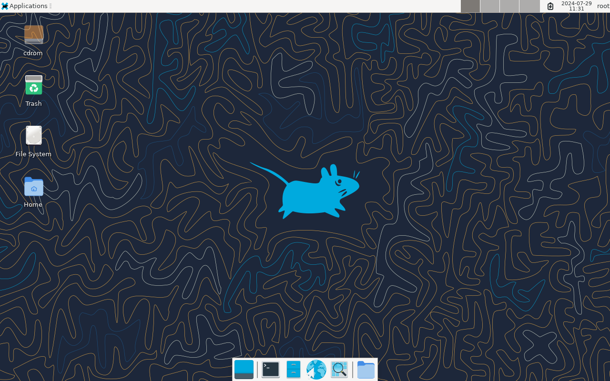
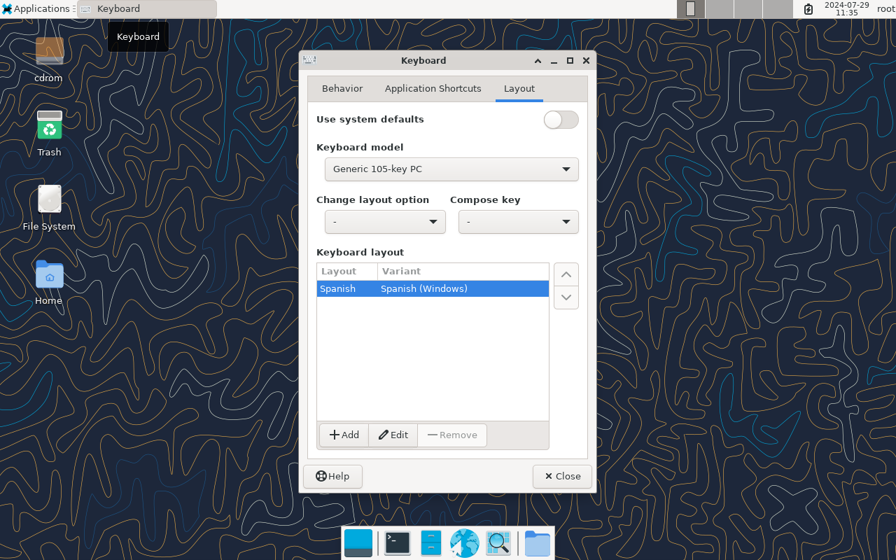
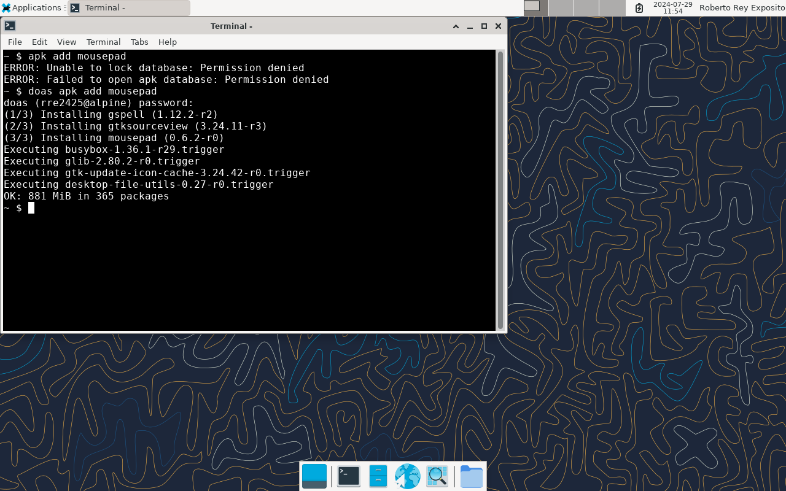

A seguinte secuencia de capturas mostra a configuración inicial de Alpine Linux 3.16 coas accións que hai que realizar en cada paso.
- Desde VirtualBox inicia a VM na que instalaches Alpine e inicia sesión co usuario que creaches durante a instalación.
- Comproba que repositorios de paquetes software están activados co comando cat /etc/apk/repositories.

O ficheiro /etc/apk/repositories é onde se garda a configuración de repositorios. Os repositorios son servidores en Internet desde onde se fan as descargas cando se instala algún programa. A saída mostra unha liña por cada repositorio e as que teñen o símbolo do cancelo # diante interprétanse como comentarios. É dicir, só está activado o repositorio principal (main) de Alpine, xa que é a única liña que non ten o símbolo do comentario diante.
- Vamos a necesitar instalar certos programas que están no repositorio da comunidade (community). Este repositorio é o que está na terceira liña do ficheiro /etc/apk/repositories e está desactivado (ten o símbolo # diante). Para activalo necesitamos eliminar o símbolo do cancelo desa liña. Isto faise co comando sed -i '3s/#//' /etc/apk/repositories.
O comando amosa un erro indicando que non temos os permisos suficientes (Permission denied) para modificar o ficheiro /etc/apk/repositories. O noso usuario pode executar comandos con permisos de administrador (como root) poñendo o comando doas diante. Esta funcionalidade foi configurada automaticamente durante a instalación de Alpine.
- Repite o comando anterior poñendo doas diante para executalo con permisos de administrador (como usuario root).

Agora si nos permite executalo e podemos ver ao executar de novo cat /etc/apk/repositories que a terceira liña xa non ten o símbolo do cancelo diante e polo tanto, o repositorio da comunidade (community) está activado.
- Actualiza o índice de paquetes dispoñíbel co comando doas apk update.

Na saída pode verse que se actualizaron os índices desde os dous repositorios que temos activados (main e community).
- Vamos instalar un ambiente gráfico de escritorio (GUI) na VM. Alpine, ao igual que acontece con outros Linux, soporta diferentes GUI. Nós vamos instalar Xfce que non demanda demasiados recursos, polo que é unha boa opción para VM. Executa o comando doas setup-desktop xfce.
O proceso de instalación leva un cacho xa que ten que descargar e instalar máis de 200 paquetes. Paciencia.

A instalación rematou correctamente.

- Apaga a VM executando o comando doas poweroff ou pechando a súa xanela (non é necesario gardar o estado) e volve iniciala desde VirtualBox.
- Agora a VM xa se inicia automaticamente no modo gráfico. Inicia sesión co teu usuario. Ten en conta que debido a un problema en Xfce coa configuración do teclado, ao escribir o contrasinal no diálogo de inicio de sesión as teclas interprétanse igual que nun teclado americano (p.e. o guión escríbese premendo a tecla que está á dereita do 0).

- Unha vez iniciada a sesión accedemos ao ambiente de escritorio de Xfce.

- Configura o teclado.
Accede a Applications->Settings->Keyboard
Na lapela Layout desactiva a opción Use system defaults e engade unha nova configuración para o teclado na primeira posición da listaxe. Ten en conta que debido ao problema comentado anteriormente, esta configuración parece funcionar só dentro da sesión Xfce pero non no diálogo de inicio de sesión. Nas capturas vese un exemplo para un teclado con teclas de Windows.


- Xfce non instala por defecto un editor de texto. Abre un terminal e instala un executando o comando doas apk add mousepad.

Unha vez instalado podes abrilo desde Applications->Accesories->Mousepad

- Podes curiosear o que queiras no ambiente de escritorio. Unha vez remates de curiosear saca a captura para a memoria de xustificación que se indica no PDF da práctica.
- Apaga a VM. Na captura vese como facelo desde o ambiente de escritorio. Tamén se pode facer desde o terminal co comando doas poweroff ou pechando a xanela da VM.